Next: Pulse trains via wavetable
Up: Pulse trains
Previous: Pulse trains
Contents
Index
When we use waveshaping the shape of the formant is determined by
a modulation term
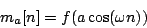
For small values of the index  , the modulation term varies only slightly from
the constant value 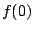, so most of the energy is concentrated at DC.
As increases, the energy spreads out among progressively higher harmonics
of the fundamental
, the modulation term varies only slightly from
the constant value 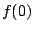, so most of the energy is concentrated at DC.
As increases, the energy spreads out among progressively higher harmonics
of the fundamental  . Depending on the function
. Depending on the function  , this spread
may be orderly or disorderly. An orderly spread may be desirable and
then again may not, depending on whether our goal is a predictable spectrum or
a wide range of different (and perhaps hard-to-predict) spectra.
, this spread
may be orderly or disorderly. An orderly spread may be desirable and
then again may not, depending on whether our goal is a predictable spectrum or
a wide range of different (and perhaps hard-to-predict) spectra.
The waveshaping function 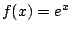, analyzed on
Page ![[*]](file:/usr/local/share/lib/latex2html/icons/crossref.png) ,
gives well-behaved, simple and predictable results. After normalizing suitably,
we got the spectra shown in Figure 5.13. A slight rewriting of the
waveshaping modulator for this choice of (and taking the renormalization
into account) gives:
,
gives well-behaved, simple and predictable results. After normalizing suitably,
we got the spectra shown in Figure 5.13. A slight rewriting of the
waveshaping modulator for this choice of (and taking the renormalization
into account) gives:
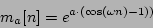
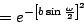
where  so that
so that  is proportional to the bandwidth. This can
be rewritten as
is proportional to the bandwidth. This can
be rewritten as
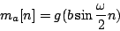
with
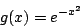
Except for a missing normalization factor, this is a Gaussian distribution,
sometimes called a ``bell curve". The amplitudes of the harmonics are
given by Bessel ``I" type functions.
Another fine choice is the (again unnormalized) Cauchy distribution:
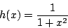
which gives rise to a spectrum of exponentially falling harmonics:
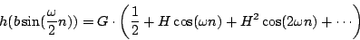
where and  are functions of the index
(explicit formulas are given in [Puc95a]).
are functions of the index
(explicit formulas are given in [Puc95a]).
In both this and the Gaussian case above, the bandwidth (counted in peaks,
i.e., units of ) is roughly proportional to the index , and the
amplitude of the DC term (the apex of the spectrum) is roughly proportional
to 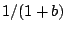 .
For either waveshaping function ( or 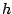), if is larger than about 2,
the waveshape of
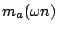 is
approximately a (forward or backward) scan of the transfer function, so
the resulting waveform looks
like pulses whose widths decrease as the specified bandwidth increases.
or 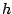), if is larger than about 2,
the waveshape of
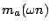 is
approximately a (forward or backward) scan of the transfer function, so
the resulting waveform looks
like pulses whose widths decrease as the specified bandwidth increases.
Next: Pulse trains via wavetable
Up: Pulse trains
Previous: Pulse trains
Contents
Index
Miller Puckette
2006-12-30